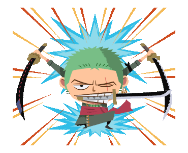
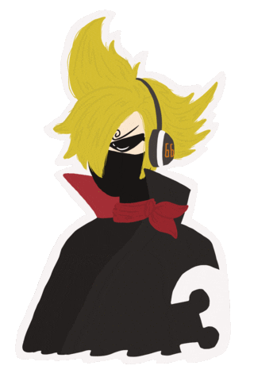

-
Luffy #001

Gomu Gomu no Mi
Luffy é conhecido por sua personalidade animada, destemida e alegre. Ele é um jovem pirata com grandes ambições de encontrar o One Piece, um tesouro lendário que supostamente concede o título de Rei dos Piratas para aquele que o encontrar. Luffy possui uma natureza impulsiva e é movido por seu senso de aventura, determinação e lealdade aos seus amigos.
-
Zoro #002
SpadaChin
Zoro é retratado como um homem alto e musculoso, com cabelos verdes e três brincos de argola em sua orelha esquerda. Ele possui uma personalidade séria, determinada e focada. Zoro é extremamente dedicado à sua busca para se tornar o maior espadachim do mundo e é conhecido por seu código de honra, lealdade e força de vontade.
-
Sanji #003
MeeleMen
Sanji é um lutador excepcional, com um estilo de luta que se baseia principalmente em chutes rápidos e poderosos. Ele é capaz de executar uma variedade de técnicas acrobáticas e usa sua agilidade para superar seus oponentes. Além disso, Sanji é extremamente ágil e pode realizar ataques incríveis usando apenas suas pernas.
-
Brook #004

Yomi Yomi no Mi
Brook é um esqueleto animado que possui um visual único. Ele usa um terno elegante, cartola, capa e carrega consigo um violão. Além disso, ele tem olhos vazios e sua cabeça é separada do corpo de vez em quando, o que é uma característica peculiar e distintiva.